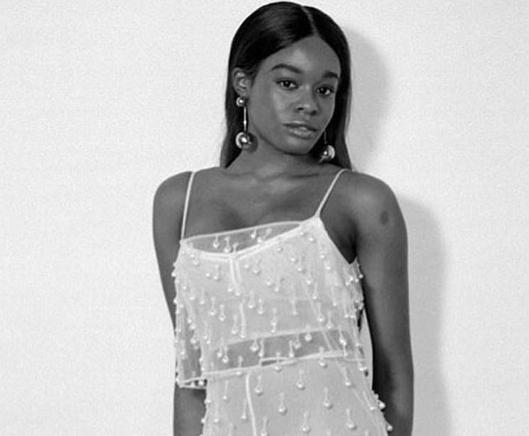

Miscellaneous Rant

THE PROBLEM WITH AZEALIA BANKS
Many of you know Azealia Banks to be the shit-talking queen of the Internet, but before she got out of hand, out of pocket, and banned from Twitter (she’s back on now), she was a talented up and coming artist. I remember when her EP, 1991, dropped. It was a strong start for her, and I definitely became a fan of 1991’s incorporation of house and hip-hop beats (at the time called witch-hop/house). Azealia Banks taste in music was very similar to mine, and I thought there was something significant about a young Black woman with different interests incorporating different sounds and aesthetics into her music.
However, Azealia Banks is an asshole. I have heard or read about some of the things she has been through, and at times I really don’t know what to believe. While I do believe that Russel Crowe did assault her, as he has a history of acting like a surly, humanoid beast, she unfortunately lies and contradicts herself often in several other instances. In fact, what I find the most irritating is that she tries to turn every slight, personal grievance, and disagreement into an overarching social justice issue, when it doesn’t always apply. When people made fun of her goddamn dried up chicken guts on her closet floor, it wasn’t because they were disrespecting African religions, it was because she turned her closet into an early 20th century butcher shop. She called a fellow dark-skinned girl a tar baby, body-shamed Skye Jackson, and called Zayn Malik a racial epithet and told him that he smells like one of the most delicious spices in the world. I cancelled her, but honestly, it’s been hard to let go of her music.
Over the past few years of her fuckery increasing, I have deleted and stayed away from her music for a period of time only to add it again when I particularly missed her assertive, confident flow on "1991" or her Fantasea mixtape, which I used to listen to almost everyday in college. Her music was energizing, fun, and refreshing. However, I do not align myself with any of her behavior and I strongly disagree with much of what she chooses to say. She seemed remorseful at times and seemed like she would change, but a quick look through her Twitter Feed shows otherwise. She will NEVER change. As long as her sycophantic fans keep supporting her just because of the few true things she says about racism in the industry, she will NEVER learn. You can’t reward someone for shitty behavior, that only reinforces to them that they can continue on without consequences. I think that’s why XXXTentacion was killed, and others agree.
We’ve talked endlessly about how this young man made violent threats of rape and had quite a few physical altercations including beating his girlfriend close to blindness, and almost killing a gay cellmate who he claimed tried to rape him. Despite this, he still gets the support of millions of fans and the respect of his peers and mentors. Kendrick Lamar, a rapper who I admire, had his label threaten to pull his music off of Spotify unless XXXTentacion’s was restored, even though it was only taken off of sponsored playlists. After all of the allegations of rape and abuse sitting on XXXTentacion’s head, you would be hard pressed to find me defending anything to do with him, however, Kendrick found merit in his music and supposed creativity. Now, I may think that XXXTentacion was just another overgrown adolescent, edgelord from the depths of 4chan hell, but who am I to judge the taste in music of another human being? I’m just concerned about the principle, and the principle is that you will suffer karma or consequences for your harmful actions one way or another, and XXXTentacion experienced that. You will get back the energy you put out whether positive or negative. Azealia Banks needs to realize that soon, and in order for her to do that, it has to cost her something.
Now, I think that many people make mistakes and say dumbass shit when they weren’t raised to see otherwise. People in the public eye often mistake their privileged position as a platform to say and do any irresponsible thing and get praise for it just because of their success. They’re learning really quickly that there are consequences to these actions, and how to filter as they mature in their age and in their craft. If Azealia Banks can make strides to continue her work and stay out of feuds, she can be something great. Put your frustration in the music, like Uncle Ebro and Rosenberg said to her in the 2014 interview on Hot 97. If she doesn’t do that, she may unfortunately end up doing something that she can’t come back from for just apologizing publicly. Let’s hope she can change in time for the sophomore album.
« Previous Next «